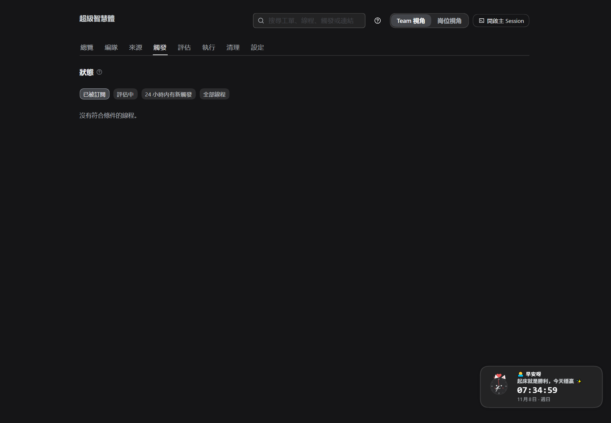
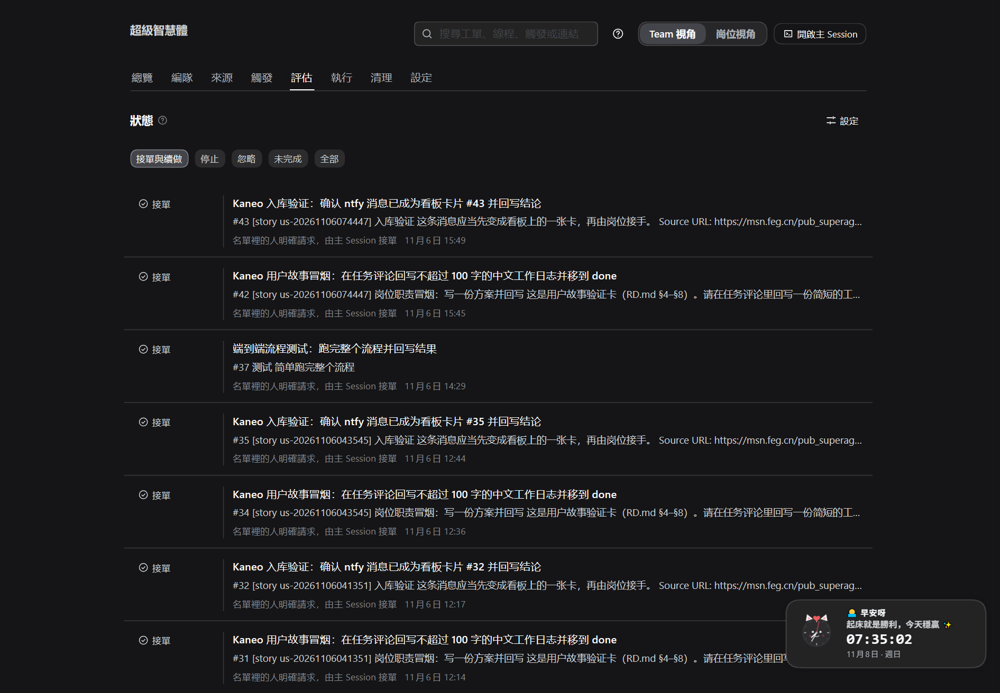
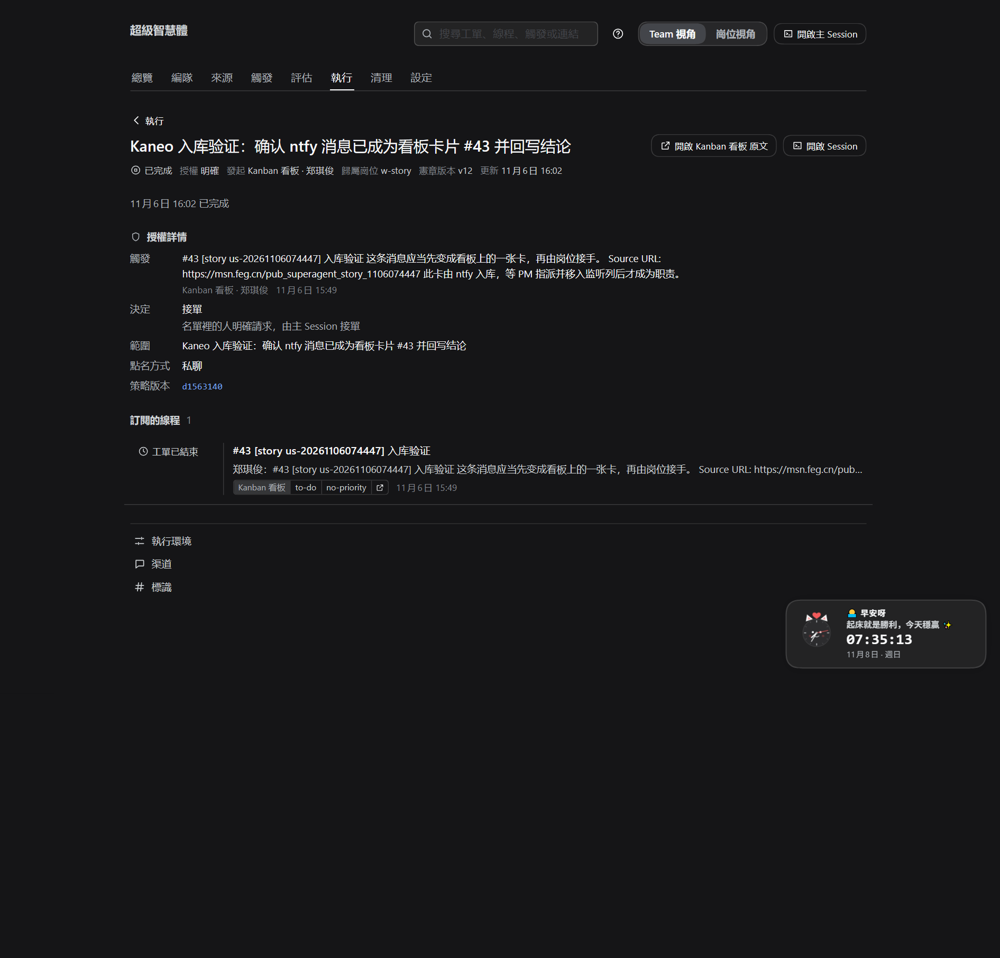

DEF.md · 配图走一遍ABC.md · 先备环境GHI.md · 接下来执行
跟着一张看板卡或一条聊天消息走完它的一生：被看见、被判断、过闸门、变成可执行的工作单。
不配环境、不讲交付——只讲这一步。
人把卡放进监听列并指派岗位，就是明确请求 → 直接路由，不经模型研判。
聊天里没点名、但发送人在名单里 → 进评估：按规则判断接不接。
闸门不过就没有工单：决定里写明理由，卡片不动。
| 词 | 在这里的意思 |
|---|---|
| 触发 Trigger | 系统"看见"的一条需求：卡进入监听列，或聊天里来了一条消息 |
| 线程 Thread | 需求的上下文：一张卡 = 一个线程；一段对话 = 一个线程 |
| 评估 Eval | 判断这条需求该不该接；只有"推断的候选"才需要模型研判 |
| 决定 Decision | 评估的结论：接单 / 忽略 / 未完成，每条都有理由 |
| 工单 Ticket | 变成可执行的工作：有标题、范围、授权依据和归属岗位 |
| 授权 Mandate | 凭什么干：谁发起、以什么方式（明确/推断）、按哪版策略 |
| 职责 Duty | 这类活怎么干：卡片用 duty:<id> 声明，规格在宪章仓库 |
| 岗位 Post | 谁来干：本机 Team 里登记的岗位；工单有"归属岗位" |
| 设置 | 在"需求 → 工单"里管什么 |
|---|---|
| 来源 → 看板 | 监听哪些列（to-do）、发起人名单、接收范围 |
| 来源 → 看板（标签） | 只收带指定标签的卡（默认不限） |
| 评估 → 规则 | "这条消息像不像一件该干的活"的规则（copy / visual…） |
| 评估 → 接单模式 | 只影响推断的候选；看板卡不受影响 |
| 评估 → 时限 / 模型 | 一次研判最多 120 秒、用哪个模型 |
| 宪章 / 职责 / 岗位 | 三道闸门的依据：有规矩、怎么干、谁承接、PM 能不能干 |
| 执行 → 并行数 / 模型 | 工单建好后同时能跑几个、谁来跑（下一份 GHI） |
| 需求从哪来 | 系统的处理 | 会产生"评估"吗 |
|---|---|---|
| 看板卡（含 ntfy 入库卡） | 显式请求 → 主 Session 直接接单路由 | 不研判，但记一条决定：接单 |
| 聊天消息 · 名单内的人点名 | 显式请求 → 直接路由 | 不研判 |
| 聊天消息 · 名单内、没点名 | 推断的候选 → 进评估 | 会研判：接单 / 忽略 / 未完成 |
| 聊天消息 · 发送人不在名单 | 在策略层就被过滤 | 不评估；来源页显示原因 |
本机现状：来源只有看板 / Gitea / ntfy / MinIO，ntfy 消息先入库成卡 → 需求都是看板卡 = 路由；模型研判要接聊天来源（如飞书）后才会出现。
| 卡上的东西 | 示例 | 为什么重要 |
|---|---|---|
| 标题 | 登录页按钮颜色改成品牌色 | 会变成工单标题 |
| 描述 | 现状截图 + 期望 + 验收口径 | 评估/派工的依据 |
| 负责人 | 前端岗位的 Kanban 账号 | 决定"发起人" |
| 标签 | duty:ui | 声明职责，闸门要用 |
| 所在列 | to-do（监听列） | 不在这列，系统看不见 |
看什么算 OK：卡有负责人、有 duty: 标签、落在监听列。标签要在进监听列之前挂好（触发时读取）。

看不到？看「来源」页 24 小时统计与过滤原因。
| 你看到的 | 含义 | 下一步 |
|---|---|---|
| 已被订阅 | 这个线程有活在看 | 等评估/工单 |
| 评估中 | 正在研判 | 等决定 |
| 24 小时内有新触发 | 最近有消息进来 | 按时间翻 |
| 线程里有"排队 N" | 还有 N 条等评估 | 等它消化 |
线程上后续消息：已有工单 → 直接送达工单，不经评估、不产生新决定；没有工单 → 回到队列评估。
再对照启用的规则；结论每条都写理由。

看什么算 OK：出现一行决定，理由一句话能读懂，点开回到线程/工单。
| 闸门（按检查顺序） | 不通过时显示 | 怎么修 |
|---|---|---|
| 项目已发布宪章 | 这个项目还没有发布宪章，不能开工 | 项目与岗位 → 发布宪章 |
| PM 不执行工人职责 | PM 岗位默认不执行工人职责… | 改派给 Worker；或在宪章写 PM 可执行职责 |
| 职责已定义 | 卡片声明的职责在职责说明里没有定义 | 在 duties/ 里加这个 duty:<id> |
| 岗位承接这个职责 | 这个职责由别的岗位承接 | 岗位卡「接哪些职责」下拉选中它 |
这四道闸门就是"没有宪章不可开工 / 职责必须先定义 / 岗位必须承接 / PM 不给自己派活"。闸门不过，卡不动、也不建单。

duty: 时开工先读| 状态 | 含义 |
|---|---|
| 排队中 | 已建单，等执行器名额 |
| 执行中 | 岗位在干（详见 GHI） |
| 待验收 | 做完了，等人看结果/合并 |
| 已结束 | 完成 / 合并 / 关闭 / 人工停止 / 无需处理 |
在哪看：触发页（线程与触发）· 评估页（决定与理由）· 执行页（工单）· 编队页（在飞职责 / WIP）· 卡片评论（进度与结果）。
| 方式 | 怎么做 | 看什么算 OK |
|---|---|---|
| A 只看历史 | 触发 → 评估 → 执行（已结束）→ 点开一张工单 | 看清"需求 → 触发 → 决定 → 工单"的对应 |
| B 看板卡演练 | 先暂停执行器，再建测试卡（duty:ui）拖进监听列 | 触发出现 → 决定=接单 → 工单排队中；看完停止并删卡 |
| C 评估演练 | 临时关掉「其它来源先入库成卡」，仅观察模式发一条不点名消息 | 评估页出现「忽略（可接单，仅观察）」或规则不符；不建单 |
时间线：T+0 上板/发消息 → T+0～1 分钟触发 → T+1 分钟决定 → 紧接着工单（闸门不过则只有带理由的忽略）。
| 现象 | 多半原因 | 怎么办 |
|---|---|---|
| 触发页根本没有 | 不在监听列 / 名单外 / 标签不符 / 来源没跑 | 看「来源」页 24 小时与过滤原因 |
| 有触发，没有决定 | 排队等主 Session / 评估中 / 暂停处理 | 稍等；查评估中与执行器暂停 |
| 忽略 · 名单外 | 卡负责人/创建者不在名单 | 评估 → 来源分节加人；或改负责人 |
| 忽略 · 仅观察 | 接单模式是"仅观察" | 正式运行改「自动接单」 |
| 忽略 · 无宪章 / 职责 / 岗位 / PM | 四道闸门之一 | 按 D4 修 |
| 未完成 | 评估超时 / 策略变更 | 线程再来一条触发会重新评估 |
看板卡直接路由、聊天候选按规则评估 → 过宪章/职责/岗位闸门 → 工单排队执行。
接下来它怎么被干完、怎么反馈与交付：见 GHI。